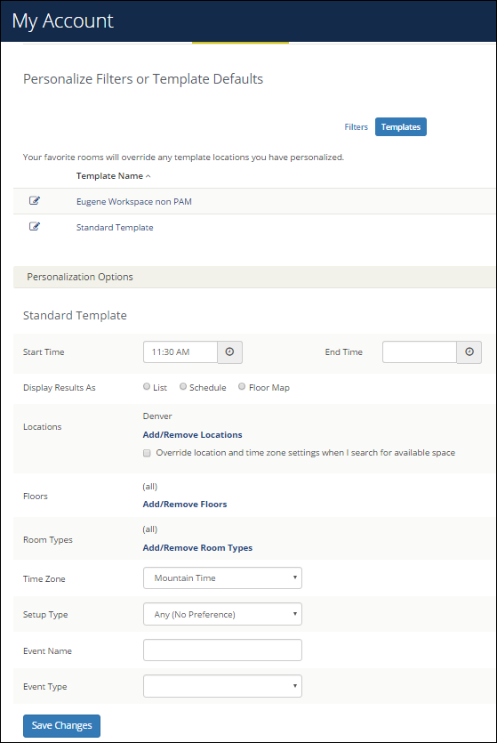

Tip: Essentially, your settings here automatically populate field values and filter search results when you make room requests. For example, setting a Start Time here will set a start time for any room request you make using this template, and setting a Setup Type will filter search results to only show rooms with that setup type.

Tip: If you select the Override location and time zone settings when I search for available space option under Locations, this means that whenever you book using this template, you can change the default location for this template during the booking process. For example, if your template Location was Denver and during booking you added Kansas, the template would be updated to Kansas going forward.